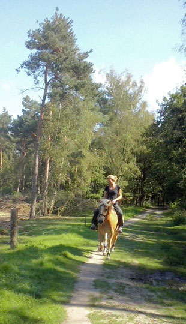
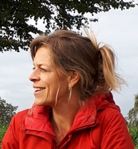

Opgeleid bij Bureau Krol, Blankestijn en Kwaaitaal (KBK) in Wageningen.
10 jaar werkzaam als trainer en coach bij landelijk opleidingsinstituut Stavoor.
Geschoold aan de Pulsar Academie. Elke verandering begint met het (h)erkennen van je werkelijke verlangen.
Bekwaam in het opleiden van vrijwilligers in terminale zorg en rouwbegeleiding.
Ervaring aan de HAN, in ziekenhuizen, hospices. Dagvoorzitter bij evenementen voor Stavoor en Vluchtelingenwerk.
„Van gelukkige leraren leer je de mooiste dingen" (Loesje). Leerkrachten, docenten en studenten verdienen het om te bloeien.
„De gelukkige eigenaar van een coachingpraktijk, gastverblijf en groepsruimte, allemaal in mijn achtertuin."
Bekijk mijn LinkedIn profiel